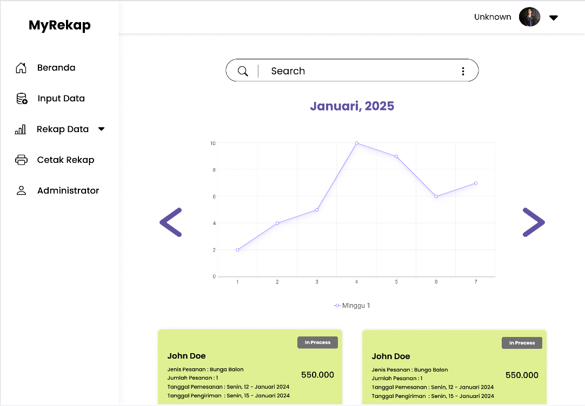
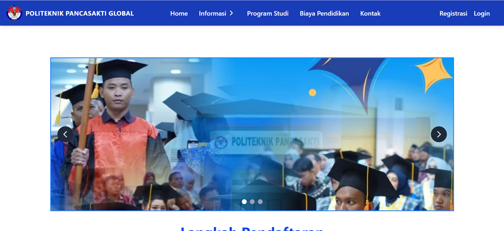
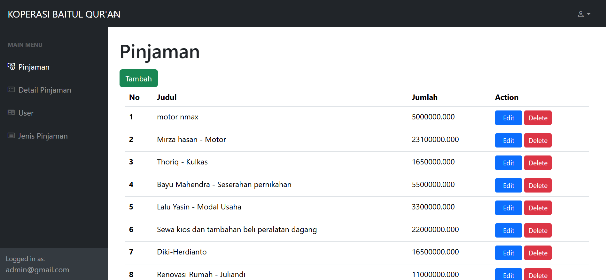
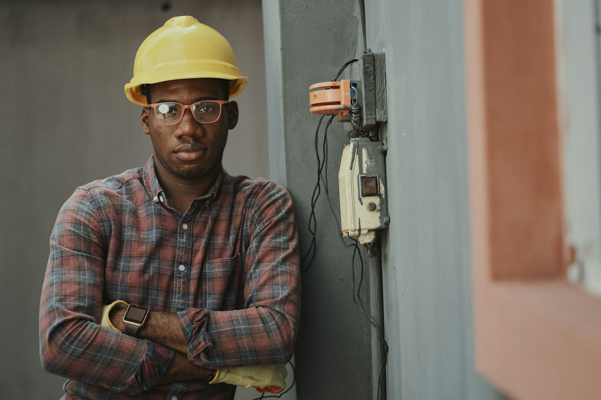
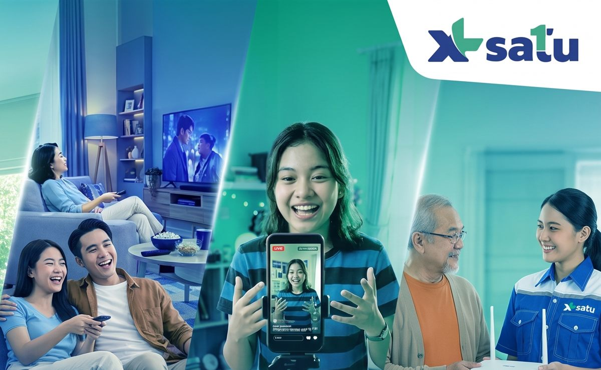

Opjasson
Opjasson AGU 2026 — SEKARANG
PENGALAMAN KERJA
Project Tetulung
Full Stack Mobile Developer
Terlibat dalam pengembangan aplikasi mobile full-stack, termasuk penentuan desain arsitektur backend.
FlutterDartCI/CDGitHubPlay Store
OPEN TO OPPORTUNITIES
Saya Azmi Ghazy Asyrof — full-stack developer yang senang merancang pengalaman digital, lalu membangunnya sampai benar-benar berjalan. Kunjungi GitHub saya untuk melihat lebih detail karya saya Opjasson
Lulusan D3 Sistem Informasi Visual dari Politeknik Pancasakti Global. Saya terbiasa terlibat dalam seluruh siklus pengembangan perangkat lunak—mulai dari merancang sistem dan basis data, sampai membangun antarmuka yang interaktif dan responsif.
Saya menikmati pekerjaan yang memadukan logika dan kreativitas. Pengalaman di pengembangan web serta dunia robotika membentuk cara saya memecahkan masalah: ingin tahu, terstruktur, dan selalu siap belajar.
Setiap pengalaman mengajarkan sudut pandang baru—dari ruang kelas hingga produk digital.
PENGALAMAN KERJA
Full Stack Mobile Developer
Terlibat dalam pengembangan aplikasi mobile full-stack, termasuk penentuan desain arsitektur backend.
PENGALAMAN MAGANG
Website Developer
Merancang UML, DFD, dan ERD; menyiapkan wireframe atau mockup; serta membangun tampilan antarmuka menggunakan HTML, CSS, JavaScript, dan React.
PENGALAMAN KERJA
Full Stack Developer
Mengerjakan perancangan sistem, wireframe, antarmuka berbasis Vue.js, dan RESTful API menggunakan Laravel 11.
PENGALAMAN KERJA
Laravel Developer
Menyusun rancangan sistem dan wireframe, mengembangkan antarmuka dengan Bootstrap, PHP, dan Laravel 11, serta membuat RESTful API.
PENGALAMAN
Robotic Trainer
Menyusun modul pembelajaran robotika untuk SD hingga SMA/SMK, mengajarkan mekanika dan elektronika, serta mendampingi siswa membuat proyek dan mempersiapkan kompetisi.
PENDIDIKAN
D3 Sistem Informasi Visual · IPK 3,42/4,00
Lulus tepat waktu. Tugas akhir: “Rancangan Sistem Informasi Pendaftaran Mahasiswa Baru Berbasis Web” dengan MySQL, Express, React, dan Node.js.
Dari sistem yang membantu operasional hingga eksplorasi antarmuka dan pengalaman web.

01 / WEB APPAplikasi untuk merangkum data penjualan toko, memantau produk dan pesanan, serta melihat laporan dengan lebih mudah.

02 / WEBSITEPengembangan website kampus yang memudahkan calon mahasiswa mengenal kampus dan mengakses informasi pendaftaran.

03 / WEB APPAplikasi pengelolaan data anggota dan pinjaman koperasi, dengan antarmuka administrasi dan integrasi API.

04 / WEBSITE LAYANANWebsite layanan instalasi listrik untuk kebutuhan rumah dan komersial, mulai dari pemasangan baru hingga perbaikan dan layanan darurat.

05 / COMPANY PROFILEWebsite profil XL Satu yang memperkenalkan layanan konektivitas rumah, myXL, dan dukungan untuk pelanggan.
Website belanja daring dengan katalog busana, koleksi produk, halaman detail, dan keranjang belanja.
Terbiasa melangkah dari rancangan sistem ke produk yang bisa digunakan.
Ada ide menarik? ↗Kejurnas · Pusat Prestasi Nasional (Puspresnas)
TalentHub · Karirhub
Dicoding
Course-Net
Codepolitan
Saya terbuka untuk obrolan, kolaborasi, dan kesempatan baru.
azmighazya@gmail.com ↗